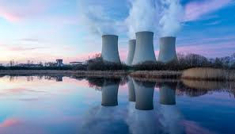
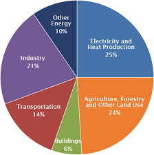

Introduction
Pollution is the introduction of harmful substances or contaminants into the natural environment. It can cause adverse changes and have detrimental effects on living organisms. Pollution affects air, water, and soil, and it poses significant risks to human health and the planet's ecosystems. Understanding pollution and its impact is crucial for implementing effective solutions and mitigating its harmful effects.
Sources of Pollution
Common sources of pollution include:
- Air pollution from vehicle emissions, industrial activities, and burning of fossil fuels.
- Water pollution from industrial discharge, agricultural runoff, and improper waste disposal.
- Soil pollution from improper disposal of hazardous waste and use of pesticides.
- Noise pollution from urban areas, construction sites, and transportation.
- Light pollution from excessive artificial lighting.
Effects of Pollution

Pollution can have significant effects on the environment and human health:
- Damage to ecosystems and biodiversity loss.
- Air pollution-related respiratory diseases.
- Water pollution-related illnesses and waterborne diseases.
- Soil contamination affecting agricultural productivity and food safety.
- Climate change due to greenhouse gas emissions.